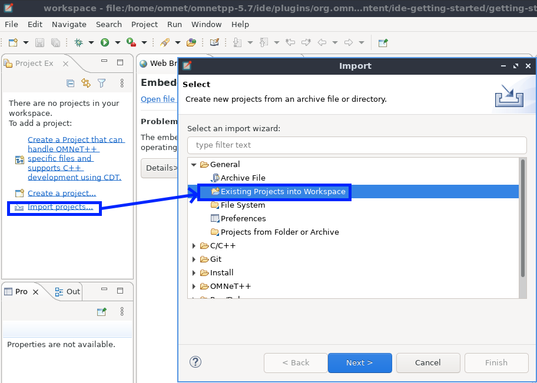
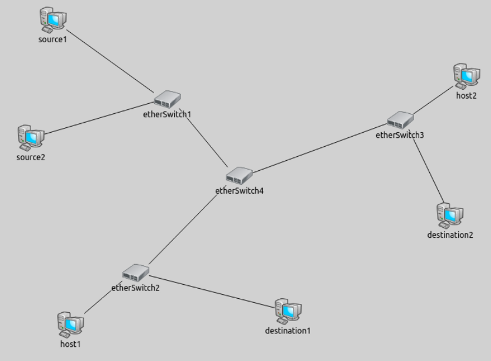

The purpose of this lab is to introduce you to the application OMNeT++ / INET. OMNeT++ is a discrete event simulation framework, which is primarily used for building network simulators, but can be used in other domains. OMNet++ simulations can be run and explored through graphical and command line interfaces. INET is a library for OMNeT++ which includes models for wired, wireless and mobile networks. Together, these applications can define and simulate networks and collect data to help us quantify network design decisions. These applications are open source software which are free to use for academic purposes.
Lab 3: Intro to OMNeT++ / INET and Ethernet Networks
ENSE 472 - Digital Networks - Laboratory
University of Regina - Engineering and Applied Science - Software Systems Engineering
Lab Instructor: Adam Tilson
A Windows, Mac or Linux computer with OMNeT++ / INET installed. You may either install this yourself, or instead use the provided VirtualBox image which includes these applications installed in a light-weight Ubuntu environment.
If you wish to install OmNET++ on a windows machine, you must build it from source. This may sound intimidating, but it’s actually not that bad. If you are on windows, this video explains the process very well.. If you follow this video, you can ignore the parts about VEINS and SUMO, we will not be using these frameworks in this course. Regardless of your operating system, you can follow the installation guide..
Alternatively, you may download my VirtualBox Image which has the software installed and ready to go.
The same principles for running a VirtualBox apply as you learned in ENSE 353.
Username and Password: omnet / omnet
Run OMNeT++ through the desktop shortcut
Image Base: Ubuntu Server + XFCE with no bloat
- Guest Additions were installed.
- This enables clipboard sharing through Devices -> Shared Clipboard
- It also enables smart desktop resizing, one of my favourite features
- The OMNeT++ / INET installation guides were followed for Ubuntu
You may need to reattach the disk image:
- This was done through
File->Media Manager-> Find and detach the VDI if it is there - Next reattach it in the actual virtual box settings (Settings -> Controller (SATA) -> omnet.vdi)
How do I shut down XFCE?
- Lower left application menu,
Leave->Shut Down
How do I get files in and out of the VirtualBox?
- Drag and Drop can be enables in
Devices->Drag and Drop
We can ensure that we have the application working by looking at the ALOHAnet sample. Lecture tie-in: What was ALOHANet?


OMNeT++ is a Discrete Event simulation framework
- primarily used for building network simulators
- Can be used in other domains
- e.g. processor development
- e.g. complex software systems.
OMNet++ simulations can be run and explored through graphical and command line interfaces.
An OMNeT++ network is comprised of a number of modules
- Can be written once and reused
- Messages can be exchanges between:
- Simple modules
- Compound modules which are composed of simple modules.
Simple modules are written in C++, using the simulation class library

With OMNeT++ we can…
- Create hierarchical modules
- Essentially the entire system is a compound module
- Module topology specified in a
nedfile.
- Specify module gates, which are the source and destinations of messages
- Specify links, how modules are connected
- Can optionally specify parameters like data rate, propagation delay, bit error rate, packet error rate
- this creates a
channel
- Model packet transmission, either in the
.nedfile or theompnetpp.inifile - Modify parameters to change how our network operates
The NED File
Describes the networks
- Create simple modules
- Create compound modules
- Combine them into a network
- Can also specify channels
- Scalable due to hierarchical nature, component-based, interfaces and inheritance
- Java-like Packages to reduce namespace collisions
The OMNeT++ IDE
The IDE included is skin of Eclipse, specifically created for writing OMNeT++ simulations.
- It is already configured for building and running your applications!
- Lets tour the UI

- The project workspace is here. By default OMNeT++ Loads INET and Sample Projects.
- In center stage, you can edit source and view and modify the topology
- The palette lets you add submodules to this module
- Switch between
Design and Sourcehere - The task bar allows you to run and debug applications.
Let’s look at some NED files…
Investigating Aloha
In the Aloha app, the Host.ned…
//
// A computer in the ALOHAnet network.
//
simple Host
{
parameters:
@signal[state](type="long");
@statistic[radioState](source="state";title="Radio state";enum="IDLE=0,TRANSMIT=1";record=vector);
double txRate @unit(bps); // transmission rate
volatile int pkLenBits @unit(b); // packet length in bits
volatile double iaTime @unit(s); // packet interarrival time
double slotTime @unit(s); // zero means no slots (pure Aloha)
double x @unit(m); // the x coordinate of the host
double y @unit(m); // the y coordinate of the host
double idleAnimationSpeed; // used when there is no packet being transmitted
double transmissionEdgeAnimationSpeed; // used when the propagation of a first or last bit is visible
double midTransmissionAnimationSpeed; // used during transmission
bool controlAnimationSpeed = default(true);
@display("i=device/pc_s");
}
and the Aloha network…
//
// The Aloha network consists of hosts which talk to the central "server" via
// the Aloha or Slotted Aloha protocol
//
network Aloha
{
parameters:
int numHosts; // number of hosts
double txRate @unit(bps); // transmission rate
double slotTime @unit(ms); // zero means no slots (pure Aloha)
@display("bgi=background/terrain,s;bgb=1000,1000");
submodules:
server: Server;
host[numHosts]: Host {
txRate = txRate;
slotTime = slotTime;
}
}
Tic-Toc Tutorial
If you would like to learn more about basic OMNeT++ usage, the tic-toc tutorial is strongly recommended!
Here’s the topolgy for tic-toc:

Here’s the tictoc1.ned file:
simple Txc1
{
gates:
input in;
output out;
}
//
// Two instances (tic and toc) of Txc1 connected both ways.
// Tic and toc will pass messages to one another.
//
network Tictoc1
{
@display("bgb=147,144");
submodules:
tic: Txc1 {
@display("p=32,103");
}
toc: Txc1 {
@display("p=119,30");
}
connections:
tic.out --> { delay = 100ms; } --> toc.in;
tic.in <-- { delay = 100ms; } <-- toc.out;
}
And here’s the simulation code:
Here’s the txc1.cc file:
(Note that .cc is a filename convention for c++ files, functionally equivalent to .cpp.)
#include <string.h>
#include <omnetpp.h>
using namespace omnetpp;
/**
* Derive the Txc1 class from cSimpleModule. In the Tictoc1 network,
* both the `tic' and `toc' modules are Txc1 objects, created by OMNeT++
* at the beginning of the simulation.
*/
class Txc1 : public cSimpleModule
{
protected:
// The following redefined virtual function holds the algorithm.
virtual void initialize() override;
virtual void handleMessage(cMessage *msg) override;
};
// The module class needs to be registered with OMNeT++
Define_Module(Txc1);
void Txc1::initialize()
{
// Initialize is called at the beginning of the simulation.
// To bootstrap the tic-toc-tic-toc process, one of the modules needs
// to send the first message. Let this be `tic'.
// Am I Tic or Toc?
if (strcmp("tic", getName()) == 0) {
// create and send first message on gate "out". "tictocMsg" is an
// arbitrary string which will be the name of the message object.
cMessage *msg = new cMessage("tictocMsg");
send(msg, "out");
}
}
void Txc1::handleMessage(cMessage *msg)
{
// The handleMessage() method is called whenever a message arrives
// at the module. Here, we just send it to the other module, through
// gate `out'. Because both `tic' and `toc' does the same, the message
// will bounce between the two.
send(msg, "out"); // send out the message
}
OMNeT++ Documentation
It’s always a great idea to read the docs!
Useful Links: How to create a simulation in OMNeT++
OMNeT++ is a generic discrete event simulator, which could be used to model any type of system. Thus, it does not have any built-in modules for common internet modules. We could code these ourselves, however this would be very time consuming. The INET Framework is a collection of modules for OMNeT++ which simulate wired, wireless and mobile networks. By using these modules, we don’t need to code them ourselves, and can quickly model real world network configurations.
Once we have downloaded and unzipped INET, we can add it to our project with…

We then build the application. Be warned, this will take a while! (>1h minutes on my machine)

INET Documentation
The Documentation for INET is also quite good!
The Ethernet Network refers to devices connected to Layer 2 devices, i.e. hubs and bridges (switches), typically using Ethernet cable. These devices are all modelled for us in the INET framework, we just need to put them together the way we would like.
- Recall that in layer 2, addressing is performed by MAC addresses.
- Hubs pass messages by simply flooding all devices, using the CSMA/CD algorithm to reduce collisions.
- A Switch instead learns which MAC Address(es) are connected to which ports, using ARP, so that packets may be forwarded specifically to the devices which need them.
INET Framework Documentation on the Ethernet
Let’s start with a sample network from an example on this page:

In the .ned file…
package inet.showcases.visualizer.canvas.datalinkactivity;
import inet.networklayer.configurator.ipv4.Ipv4NetworkConfigurator;
import inet.node.aodv.AodvRouter;
import inet.node.ethernet.Eth100M;
import inet.node.ethernet.EthernetSwitch;
import inet.node.inet.AdhocHost;
import inet.node.inet.StandardHost;
import inet.physicallayer.wireless.ieee80211.packetlevel.Ieee80211ScalarRadioMedium;
import inet.visualizer.common.DataLinkVisualizer;
import inet.visualizer.common.IntegratedMultiVisualizer;
import inet.visualizer.common.IntegratedVisualizer;
network DataLinkVisualizerFilteringShowcase
{
@display("bgb=900,600");
submodules:
visualizer: IntegratedVisualizer {
@display("p=80,50");
}
configurator: Ipv4NetworkConfigurator {
parameters:
@display("p=80,120");
}
etherSwitch1: EthernetSwitch {
@display("p=376.896,169.12");
}
etherSwitch3: EthernetSwitch {
@display("p=723.592,200.528");
}
source1: StandardHost {
@display("p=206.568,50.736");
}
etherSwitch4: EthernetSwitch {
@display("p=484.408,283.88");
}
destination1: StandardHost {
@display("p=556.888,485.616");
}
destination2: StandardHost {
@display("p=798.488,343.072");
}
source2: StandardHost {
@display("p=173.952,227.104");
}
etherSwitch2: EthernetSwitch {
@display("p=329.784,428.84");
}
host1: StandardHost {
@display("p=233.144,506.152");
}
host2: StandardHost {
@display("p=822.648,135.296");
}
connections:
etherSwitch1.ethg++ <--> Eth100M <--> source1.ethg++;
etherSwitch1.ethg++ <--> Eth100M <--> etherSwitch4.ethg++;
etherSwitch4.ethg++ <--> Eth100M <--> etherSwitch3.ethg++;
etherSwitch1.ethg++ <--> Eth100M <--> source2.ethg++;
etherSwitch3.ethg++ <--> Eth100M <--> destination2.ethg++;
etherSwitch4.ethg++ <--> Eth100M <--> etherSwitch2.ethg++;
etherSwitch2.ethg++ <--> Eth100M <--> destination1.ethg++;
etherSwitch3.ethg++ <--> Eth100M <--> host2.ethg++;
etherSwitch2.ethg++ <--> Eth100M <--> host1.ethg++;
}
Address Resolution Protocol (ARP)
Recall layer 2 devices do not understand IP addresses, only MAC Addresses
- Thus, a layer 2 device has to know which interface each physical MAC address is connected to
- An ARP request is a special packet which is flooded through the networking, asking for a response from the target device
- The Switch remembers the address which initiated the request, adding it to the ARP table
- If a packet arrives at a device which is not the target, it is ignored
- If the packet arrives at the destination, a response is issued
- The response propagates back through the network in the reverse order.
- We no longer need to flood, we remember our reverse order
- The devices remember the location of the return response, updating the ARP table
- The response propagates back through the network in the reverse order.
- Once the entire response is returned, the intermediate devices have learned the pathway to
Presenting your Results
- OMNeT++ will typically be configured to display data in a raw format.
- e.g. dumping the results to a log file
- It will often be appropriate to display this data in some form of graph.
- The IDE has some built in tools for visualizing messages being sent
- Instead, you may with to use a data visualization utility like MatLab or MatPlotLib
- Using our lab example as a starting point, individually implement:
- The Star Topology
- The Bus Topology
- Which type of device do you need to use for each? How many?
- Which networks require an algorithm for Collision Detection?
- Rerun the Simulation
Submission
- Please submit the source files for each of your topologies
- Additionally, submit a 1-page report with relevant data you collected and analysis. (Be brief!)
References:
J. Skiles. Getting started with OMNET++, INET, Veins, and SUMO. YouTube.com. May 26, 2020. [Online].
J. Skiles. How To Set Up OMNet++ in Ubuntu 20+. YouTube.com. January 10, 2021. [Online].
J. Skiles. An Overview of OMNET++. YouTube.com. June 21, 2020. [Online].